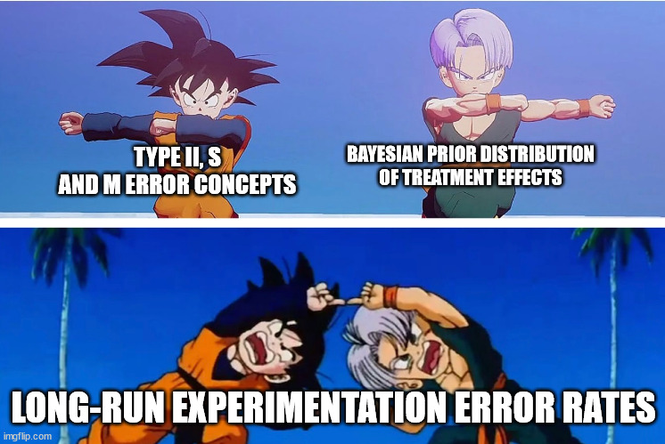

Statistical guarantees and long-term error rates in A/B testing
Type I and II error rates don’t feel satisfactory, but getting to error rates that matter require Bayesian-like assumptions
TL;DR
The “statistical gurantees” in A/B testing (Type I and II error rates) only guarantee reproducibility of a single experiment. They don’t provide any assurance over # of wrong decisions (errors) you are likely to make over a series of experiments.
Type I error rate, in particular, is not very useful in the industry setting where small effect sizes still matter (from a business perspective, they are not equivalent to zero) and null hypothesis is, likely, never true.
Type S error (probability to observe a result with an opposite sign than the true effect) and Type M error (ratio of exaggeration of observed effect vs. true effect) are much more useful measures than pure Type I and Type II error rates.
You can only get to long-term error rates over series of experiments with Bayesian-like assumptions of effect size (experimental impact) distribution.
Depending on your belief of experiment impact distribution, running experiments that have \(80\%\) estimated statistical power may yield very different long-term detection rates; \(80\%\) detection rate is only achievable if you have a very succesful product team. Otherwise, it’s easy to arrive at \(50\%\) and lower detection rates.
The risk of wrong decisions (Type S error) is minimal, \(0.2\% - 0.3\%\). Exageration errors are unavoidable (winner’s curse phenomenon), but running experiments at \(50\%\) power or more reduces their impact considerably.
Here’s a Streamlit app to estimate long-term error rates yourself.
Why Type I and Type II error rates are not enough
Suppose you’re the Head of Something Data Related in a company that runs many experiments annually, and your job is to ensure that the experimentation program is trustworthy. It’s still in the early stages of the experimentation journey in this company, so most tests use null hypothesis testing (NHT) with fixed sample sizes (although you’re looking into sequential testing and CUPED, too). You set the following rules for every experiment:
Only experiments with a p-value < 0.05 will be considered as having conclusive outcomes (you target a Type I error rate \(\alpha=0.05\)).
Every experiment should be run with a predetermined sample size, which implies a power of 80% (you target a Type II error rate \(\beta=0.1\)) for the selected minimum detectable effect (MDE).
Setting aside the considerations on whether these are the best thresholds and other issues with using NHT, here’s one question that, arguably, should matter to someone responsible for an experimentation program:
What long-term error rates (a.k.a. bad decisions) can I expect if I run the experimentation program with such parameters?
It may seem the answer is Type I and Type II error rates, or, “We will detect (i.e., declare them as statistically significant) differences when they exist, 80% of the time, and, in 5% of the cases we detect differences, they will be due to imperfect sampling randomization and not true differences”. But that is only true under a few conditions:
You will have some experiments where the actual difference is precisely zero—not “close enough to zero,” but literally zero.
When estimating the required sample size in every experiment, you will always choose MDE precisely equal to the actual unobservable difference for that specific experiment.
Neither of these conditions is likely to hold in the real world.
You can get around the second assumption if the MDE used is “minimum effect you care about”. Then, you can make a statement that “when the true effect is at least as large as the MDE, we will detect it with at least 80% of the time”. However, in the world of online experiments, do you really not care about detection rates of small effect sizes? A conversion rate improvement of 0.5 percentage point may still mean many $$ annually. Achieving 80% power on such an effect size requires 3-4x sample size (depending on the baseline) than an 80% power on an effect size of 1 percentage point. Are you willing to make that trade-off and make all experiments 3-4x slower?
I’d argue that, in practice, practitioners tend to set MDEs above the minimum effects they care about. On top, conceptually, every experiment likely has a non-zero impact (they may be small, but not exactly zero - otherwise it may be worth disbanding the product team..). As a result, Type I and II error rates aren’t likely to represent the long-term error rates. They have not been designed for that. Instead, they represent frequentist statistics and its definition of probability—the likelihood of observing the same results if you run the same experiment repeatedly.
For Head of Something Data, however, knowing whether the results of a particular experiment hold may not be enough. You (should!) also want to know the long-term error rates.
For that, we need some other measures & some other tools.
Moving beyond Type I error rates: Type M and S errors
Type I error rate, \(\alpha\) is the most known statistical concept among everyone, including non-technical stakeholders. It’s probably the most misinterpreted one, too, given all the issues people have with p-values.
For something so popular, I’d argue it’s not so valuable because:
It’s independent of the sample size. Isn’t that weird? No matter how much data you collect, you’re guaranteed that, if there’s no underlying difference, 5% of the time, you will still find statistically significant differences in the data when using a p-value of 0.05. Intuitively, one would think that more data equals more confidence in results, but the Type I error rate doesn’t change! Yes, the estimates become tighter, but the Type I error rate doesn’t measure that.
How often do you run experiments that have precisely no impact? Hopefully, never. So you’ll never need to worry about it! It’s tempting to approximate zero with “effect sizes so small they don’t matter,” but Type I error rates say nothing about small effect sizes.
Gelman and Carlin (2014) introduced two other metrics that I think are much more useful to consider:
Type S (sign) error. It’s the probability that an observed difference, when declared statistically significant, has an opposite sign than the actual difference. In other words, it is the probability that you will make a decision opposite to what you are after.
Type M (Magnitude) error measures how much the observed difference, when declared statistically significant, differs from the actual difference, expressed as a ratio. It partially addresses the issue of quantifying the risk of declaring “effect sizes so small that they don’t practically matter” as statistically significant and is closely related to the winner’s curse phenomenon.
Unlike Type I errors, type M and S error rates directly translate to business implications. Furthermore, they become smaller as sample sizes increase, as they operate in the “when the alternative hypothesis is true” land, i.e., when the effect sizes are not exactly zero.
Calculating Type S and M error rates
The original paper proposed calculating Type S and M error rates via simulation using the following function, where \(A\) is the effect size, \(s\) is the standard error, \(\alpha\) is the chosen level of statistical significance, and \(df\) represents the degrees of freedom.
If we wanted to compute the metrics for a hypothetical A/B test with a binary outcome metric (e.g., conversion rate) where the baseline is 17%, MDE of interest is 1 percentage point, and the sample size was 6000 users in each group:
Code
n_group =6000baseline =0.17delta =0.01#calculate the baseline variancebaseline_var = baseline * (1- baseline)#calculate standard error by estimating pooled variancest_error =sqrt(baseline_var / n_group + baseline_var / n_group)#degrees of freedom is N*2 - 2df_test = n_group *2-2#use Gelman's function to get error rate estimatesgelman_formula =retrodesign(A=delta, s=st_error, df = df_test) |>as_tibble() |>mutate(method ='Gelman/Carlin simulation')gelman_formula |>kbl(caption ='Estimated Metrics') |>kable_styling()
Estimated Metrics
power
typeS
typeM
method
0.3081444
0.0010259
1.78223
Gelman/Carlin simulation
We can validate power calculations using R’s built-in function. Power estimates are very close (differences due to simulation error).
Two-sample comparison of proportions power calculation
n = 6000
p1 = 0.17
p2 = 0.18
sig.level = 0.05
power = 0.3020516
alternative = two.sided
NOTE: n is number in *each* group
In 2019, Lu, Qui, and Deng published a paper that includes closed-form formulas for these error rates. The implementation of them is straightforward, too (and can be easily extended to unequal sample size designs):
Finally, we can verify that all these formulas are correct with a small simulation. In this simulation, we repeat the same experiment with the above parameters many times and estimate empirical error rate estimates.
Quantifying decision-making risk with Type S and M error rates in a single experiment
Lu, Qiu, and Deng’s paper includes a few charts that I replicate below as they are excellent illustrations of the risk associated with Type S and M error rates. On the x-axis, we plot statistical power, and on the y-axis - Type S error rate / Type M ratio:
We can see that Type S error (which is really bad, decision-making-wise!) largely disappears once we hit power of 0.35−0.4. On the other hand, the type M ratio only goes below 1.5x once we achieve the statistical power of \(0.5\). If this does not illustrate the issues with underpowered experiments, I don’t know what does!
From Type II/M/S errors to long-term error rates

In my opinion, Type S and M error rates are much more helpful than pure Type I and II errors. However, just like Type II errors, they are not long-term error rates unless we assume we will perfectly set the MDE to the actual effect size in each experiment. If we could do that, we would not need to run experiments!
We could skirt around this issue by reframing error rates to focus on limits/margins, similar to how it’s done with MDE. However, a statement like “we have at most X% risk of sign error when we detect statistically significant results and the underlying effect size is at least Y” does not feel very satisfactory.
Can we do better?
We can, but it requires an additional assumption (there is no free lunch, as always!). We’ll borrow an idea from Bayesian statistics: instead of working with fixed values, we can assume a distribution of likely effect sizes (a.k.a. prior distribution)and then integrate over that distribution to get expected error rates.
Some potential effect size distributions
How do we select potential treatment size distributions? It’s subjective and depends on what you believe! I will use four hypothetical cases:
Typical team. On average, it achieves a \(1.5\) percentage point improvement in a metric of interest. The team is as likely to ship experiments that deviate positively from the average as they do negatively, with ~15% of experiments resulting in adverse impact and most experiments falling within \(0-4.5\) percentage point improvements.
Downside-protected team. This team ships experiments with the same average impact, but the distribution is not symmetric. There is a longer tail of positive effects and no situations where experiments do extremely poorly (because of safeguards such as dogfooding, UXR, etc.).
Fifty-fifty team. This team ships experiments with the same variance as the typical team, but their win rate is just 50/50.
Golden team. A team that’s hard to beat - they primarily ship winning experiments, and some of them reach up to \(5\) percentage point improvements.
Summary statistics of assumed effect size distributions
Assumed distribution
Avg. effect
Q10
Q90
Golden team
0.0250048
0.0058990
0.0483748
Downside-protected team
0.0149691
0.0003038
0.0338062
Typical team
0.0149349
-0.0029794
0.0329643
Fifty-fifty team
-0.0000161
-0.0178059
0.0180195
Estimating long term error rates
Suppose we believe our average treatment effect is \(0.015\). In a standard setting, we may choose to use it as an MDE. We could estimate the sample size required to achieve 80% power and a \(17\%\) conversion baseline - that’s about 10,200 observations per group.
We can see that “average statistical power” (i.e. the probability we will declare an observed difference as statistically significant given our assumptions about sample size, baseline metric value, and effect size distribution):
It is lower than the 80% that the classical MDE calculation yields — which is not unexpected, as the latter only considers effect size equal to the MDE, while prior distributions include a lot of density of smaller effect sizes.
Anywhere between \(49\%\) and \(79\%\) - prior distribution assumption matters a lot!
We can also plot expected detection rates as a function of statistical power using a fixed MDE.
An often-quoted figure for the win rate in online experiments is \(10-20\%\). The detection rate also includes experiments with a negative impact, so it’s not a 1:1 comparison, but it seems that these prior distributions are way too optimistic! Or, alternatively, the MDEs used in practice are too high, resulting in low power.
We can do the same with Type S error and Type M error. I will make one tweak to the definitions, though: instead of focusing on conditional error rates (“when the result is statistically significant, what is the probability…”), I’ll estimate the overall error rates (“out of all experiments that we run, what’s the probability that..”). I think these rates are more helpful to think about when considering long-term error rates, as they tell us probabilities of error with all experiments as the denominator. If needed, we can divide them by the average detection rate to get back to original Type S and M definitions.
We can see that, on average, the risk of sign error is \(0.2\%-0.3\%\). That is much higher than what a fixed effect size calculation suggests, but, as a long-term error rate, that’s still very low.
Type M is a bit trickier because it’s a ratio, and integrating it at small effect sizes is challenging as the ratio’s denominator approaches zero. Instead of estimating the “average Type M ratio”, I will estimate “average absolute exaggeration”. That is:
We can see that it works out to be \(~0.1\) percentage point at power of \(80\%\) (using MDE of \(1.5\%\)).
This approach, by the way, gets us quite close to expected loss metric used in Bayesian A/B testing, where instead of just capturing the cost of an error as a binary one (like we did above with power or sign error), we capture the magnitude of it, too (a sign error on an estimated effect size of \(5\) percentage point is not the same as one on an effect size of \(0.5\) percentage point!). But that’s for a future blog post.
And that’s it. All that’s left is to come up with prior distributions, MDE, and estimate long-term error rates on your own. I made a small Streamlit app just for that.
Appendix - I don’t trust the maths
Me neither. So I ran another simulation just to double check - looks like it all adds up. Exaggeration ratios are a bit off, but I suspect that differences arise from numerical approximations in integration.